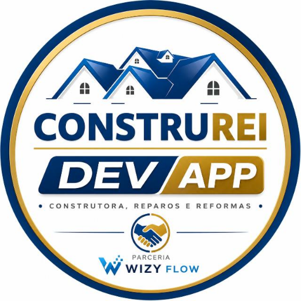

APP CONSTRU-REIGestor do Projeto • módulo operacional
INFRAESTRUTURA • CONTROLE MÓVEL
Cofre Zero
Uma visão no celular, alimentada pelos executores da nuvem. Sem notebook, sem Work e sem precisar abrir cada provedor para consultar o andamento.
Conectando aos registros de execução…
Motor do backup…Supabase • leitura direta
Último inventário…Registros totais
Quadros Trello13**Último levantamento verificado
Execuções GitHub…Últimas rotinas observadas